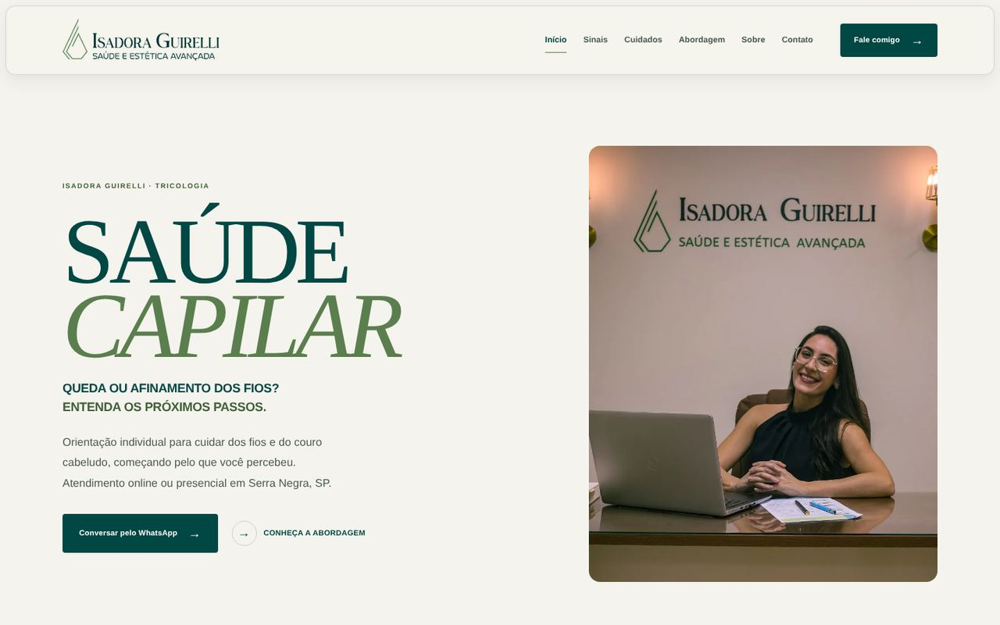
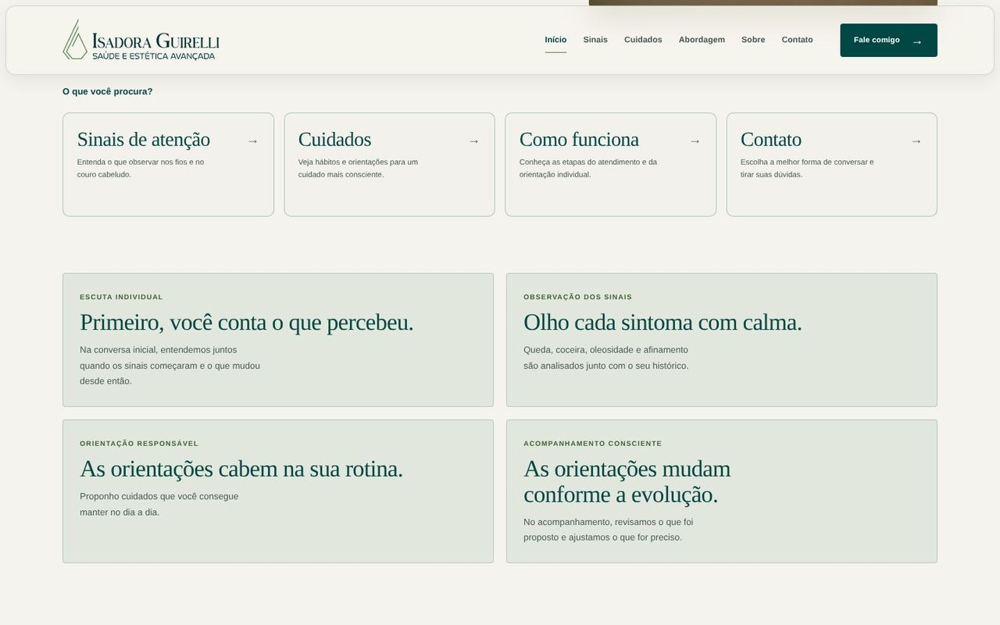
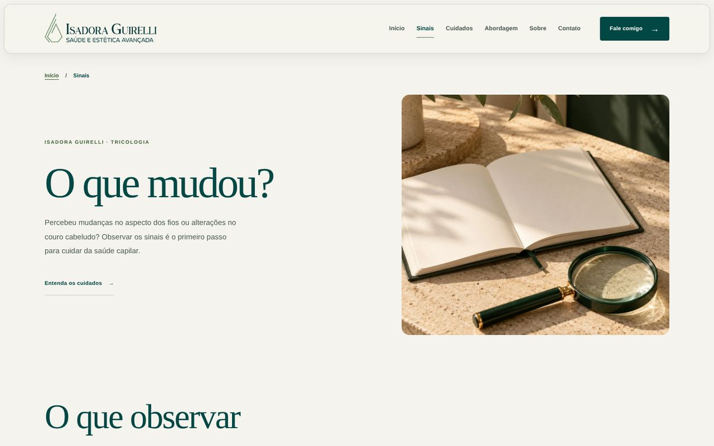
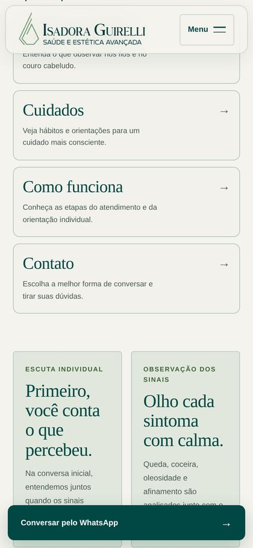

Começo direto
Logo na primeira tela, a pessoa entende o que é o atendimento e já pode chamar no WhatsApp ou conhecer como ele funciona.
Site de uma especialista em saúde capilar em Serra Negra (SP). Explica com calma os sinais de queda e afinamento dos fios e leva a pessoa até uma conversa pelo WhatsApp.

Navegue pelas páginas de sinais, cuidados e atendimento. No modo celular, desça a página para ver o botão de WhatsApp.
Um jeito rápido de saber se um projeto assim faz sentido para você.
As partes que mais ajudam o cliente a decidir, e o que cada uma resolve.
Logo na primeira tela, a pessoa entende o que é o atendimento e já pode chamar no WhatsApp ou conhecer como ele funciona.

Quatro atalhos levam a quem quer entender os sinais, cuidar da rotina, saber como é o atendimento ou falar direto.

Páginas curtas sobre o que observar nos fios e quando procurar um dermatologista. A pessoa chega à conversa mais tranquila e com as dúvidas mais claras.

No celular, um botão de WhatsApp acompanha a leitura. Quando já existe outro botão de contato na tela, ele sai do caminho para não atrapalhar.
Cuidados que não aparecem à primeira vista, mas fazem diferença no dia a dia.
Ajustado para telas pequenas e grandes, com o contato sempre a um toque.
Cada página tem título e descrição próprios, e o Google entende que é um atendimento de saúde em Serra Negra.
São arquivos leves que funcionam em qualquer hospedagem, sem depender de plataforma.
Funciona com teclado e com leitores de tela, e o menu do celular abre e fecha de um jeito previsível.
Você conta o contexto e recebe por escrito o escopo, as entregas e o investimento antes de qualquer execução.